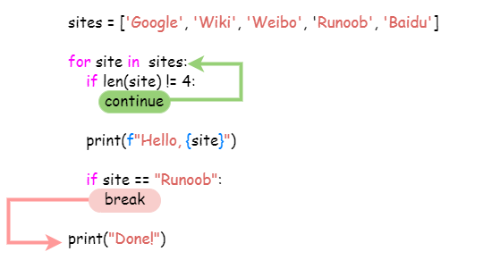

Python3 Loop Statements
This chapter will introduce the use of Python loop statements.
The loop statements in Python are for and while.
The control structure diagram of Python loop statements is as follows:

Loop Control Keywords and Methods
| Keyword / Function | Description | Example |
|---|---|---|
for |
Iterative loop, used to traverse sequences or iterable objects | for i in list: |
while |
Conditional loop, continues executing while the condition is True | while x > 0: |
break |
Immediately terminate the current loop | break |
continue |
Skip the remaining code of this loop and proceed to the next iteration | continue |
else (loop) |
Executed when the loop ends normally (not terminated by break) | for i in range(3): ... else: ... |
pass |
Placeholder statement in a loop (no operation) | for i in range(5): pass |
range() |
Generates integer sequences, often used with for loops | range(0, 5) |
enumerate() |
Obtains the index and value simultaneously during iteration | for i, v in enumerate(list): |
while Loop
The general form of the while statement in Python:
while 判断条件(condition)：
执行语句(statements)……
The execution flow chart is as follows:

Execution Gif demonstration:

Also pay attention to the colon and indentation. In addition, there is no do..while loop in Python.
The following example uses while to calculate the sum of 1 to 100:
Example
The execution result is as follows:
1 到 100 之和为: 5050
Infinite Loop
We can implement an infinite loop by setting the conditional expression to never be false, as in the following example:
Example
After executing the above script, the output result is as follows:
输入一个数字 :5 你输入的数字是: 5 输入一个数字 :
You can use CTRL+Cto exit the current infinite loop.
Infinite loops are very useful for real-time requests from clients on servers.
while Loop Using else Statement
If the condition statement after while is false, the else statement block is executed.
The syntax format is as follows:
while <expr>:
<statement(s)>
else:
<additional_statement(s)>
If the expr condition is true, the statement(s) block is executed; if it is false, additional_statement(s) is executed.
Loop to output numbers and compare their sizes:
Example
After executing the above script, the output result is as follows:
0 小于 5 1 小于 5 2 小于 5 3 小于 5 4 小于 5 5 大于或等于 5
Simple Statement Group
Similar to the syntax of the if statement, if your while loop body contains only one statement, you can write that statement on the same line as the while, as shown below:
Example
Note:You can use CTRL+C to interrupt the above infinite loop.
After executing the above script, the output result is as follows:
Welcome to Runoob Tutorial! Welcome to Runoob Tutorial! Welcome to Runoob Tutorial! Welcome to Runoob Tutorial! Welcome to Runoob Tutorial! ……
for Statement
Python for loop can iterate over any iterable object, such as a list or a string.
The general format of the for loop is as follows:
Flow chart:

Python for loop example:
Example
The output result of the above code execution is:
Baidu Google Runoob Taobao
It can also be used to print each character in a string:
Example
The output result of the above code execution is:
r u n o o b
Integer range values can be used together with the range() function:
Example
The output result of the above code execution is:
1 2 3 4 5
for...else
In Python, the for...else statement is used to execute a block of code after the loop ends.
The syntax format is as follows:
for item in iterable:
# 循环主体
else:
# 循环结束后执行的代码
When the loop finishes executing (that is, after all elements in the iterable have been traversed), the code in the else clause will be executed. If a break statement is encountered during the loop, the loop will be interrupted, and the else clause will not be executed at this point.
Example
print(x)
else:
print("Finally finished!")
After executing the script, the output result is:
0 1 2 3 4 5 Finally finished!
The following for example uses the break statement. The break statement is used to jump out of the current loop body, and the else clause will not be executed:
Example
After executing the script, when the loop reaches "Runoob", it will jump out of the loop body:
循环数据 Baidu 循环数据 Google 菜鸟教程! 完成循环!
range() Function
If you need to iterate over a sequence of numbers, you can use the built-in range() function. It will generate a sequence of numbers, for example:
Example
You can also use range() to specify values in an interval:
Example
You can also make range() start at a specified number and specify a different increment (which can even be negative, sometimes also called 'step'):
Example
Negative numbers:
Example
You can combine the range() and len() functions to iterate over the indices of a sequence, as shown below:
Example
You can also use the range() function to create a list:
Example
For more on the usage of the range() function, refer to:https://www.runoob.com/python3/python3-func-range.html
break and continue Statements and else Clauses in Loops
break execution flow chart:

continue execution flow chart:

while statement code execution process:

for statement code execution process:

breakThe break statement can jump out of the for and while loop bodies. If you terminate from a for or while loop, any corresponding loop else block will not be executed.
continueThe continue statement is used to tell Python to skip the remaining statements in the current loop block, and then proceed to the next round of the loop.
Example
Using break in while:
Example
while n > 0:
n -= 1
if n == 2:
break
print(n)
print('Loop ended.')
The output result is:
4 3 循环结束。
Using continue in while:
Example
while n > 0:
n -= 1
if n == 2:
continue
print(n)
print('Loop ended.')
The output result is:
4 3 1 0 循环结束。
More examples are as follows:
Example
The output result of the above script is:
当前字母为 : R 当前字母为 : u 当前字母为 : n 当前字母为 : o 当前字母为 : o 当前变量值为 : 10 当前变量值为 : 9 当前变量值为 : 8 当前变量值为 : 7 当前变量值为 : 6 Good bye!
The following example loops through the string Runoob and skips the output when the letter o is encountered:
Example
The output result of the above script is:
当前字母 : R 当前字母 : u 当前字母 : n 当前字母 : b 当前变量值 : 9 当前变量值 : 8 当前变量值 : 7 当前变量值 : 6 当前变量值 : 4 当前变量值 : 3 当前变量值 : 2 当前变量值 : 1 当前变量值 : 0 Good bye!
Loop statements can have an else clause; it is executed when the loop terminates by exhausting the list (with a for loop) or when the condition becomes false (with a while loop), but it is not executed when the loop is terminated by break.
The following example is a loop example for finding prime numbers:
Example
The output of executing the above script is:
2 是质数 3 是质数 4 等于 2 * 2 5 是质数 6 等于 2 * 3 7 是质数 8 等于 2 * 4 9 等于 3 * 3
pass Statement
Python pass is a null statement, used to maintain the integrity of the program structure.
pass does nothing; it is generally used as a placeholder statement, as in the following example
Example
The smallest class:
Example
The following example executes the pass statement block when the letter is o:
Example
The output of executing the above script is:
当前字母 : R 当前字母 : u 当前字母 : n 执行 pass 块 当前字母 : o 执行 pass 块 当前字母 : o 当前字母 : b Good bye!Other extensions